CSS 水平垂直居中总结
前言
在网页布局中经常需要设置水平居中或( 和 )垂直居中。在不同的场景中实现的方法也各有不同，本文总结自己曾经碰到过的情况，算是对这个知识点的回顾和总结。
水平居中
元素水平居中的前提是父元素必须是块级盒子容器，且父元素宽度必须已经被设定好。本文以下案例，所有父元素基础样式为：
.wrapper {
position: relative;
margin-bottom: 20px;
margin-top: 20px;
width: 400px;
height: 300px;
border: 2px solid #ccc;
box-sizing: border-box;
}
- 子元素是块级元素且宽度没有设定，没有居中的概念，会占满整个父元素的宽度。
html 结构：
<div class="wrapper"> <div class="content"> 子元素是块级元素且宽度没有设定，没有居中的概念，会占满整个父元素的宽度 </div> </div>css 样式表：
.content { background-color: green; color: white; }结果如下：
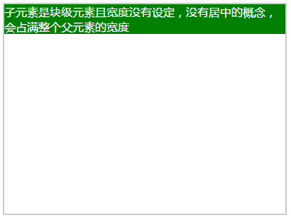 -
子元素是内联元素，宽度由其内容决定。设置父元素 text-align: center;
hmtl 结构：
<div class="wrapper center"> <span class="span"> 子元素是内联元素，宽度由其内容决定。设置父元素 text-align: center; </span> </div>css 样式表：
.center { text-align: center; }结果如下：
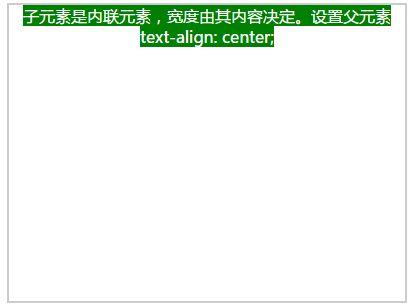 - 子元素是块元素，宽度确定。
.child { color: white; width: 150px; height: 150px; box-sizing: border-box; border: 1px solid #000; background-color: green; }- 给子元素添加margin:0 auto;
html 结构：
<div class="wrapper"> <div class="child child1"> 子元素是块元素，宽度确定。给子元素添加margin:0 auto; </div> </div>css 样式表：
.child1 { margin: 0 auto; }结果如下：
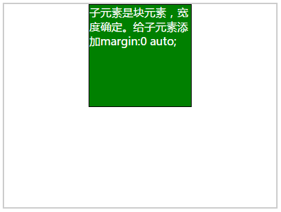 - 子元素相对父元素绝对定位。left: 50%; margin-left: -(子元素宽度)/2;
html 结构：
<div class="wrapper"> <div class="child child2">子元素是块元素，宽度确定。子元素相对父元素绝对定位。 left: 50%; margin-left: -(子元素宽度)/2; </div> </div>css 样式表：
.child2 { position: absolute; left: 50%; margin-left: -75px; }结果如下：
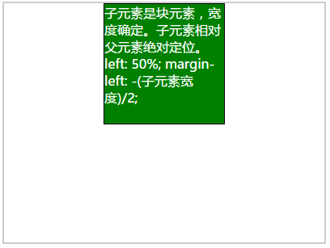 -
父元素设置padding-left=(父元素宽度-子元素宽度)/2
html 结构：
<div class="wrapper wrapper1"> <div class="child"> 子元素是块元素，宽度确定。父元素设置padding-left=(父元素宽度-子元素宽度)/2 </div> <div>css 样式表：
.wrapper1 { padding-left: 125px; } - 子元素设置margin-left=(父元素宽度-子元素宽度)/2。原理同上。
-
父元素flex布局。flex-direction: row; justify-content: center;
html 结构：
<div class="wrapper wrapper2"> <div class="child"> 子元素是块元素，宽度确定。父元素flex布局。flex-direction: row; justify-content: center; </div> </div>css 样式表：
.wrapper2 { display: flex; flex-direction: row; justify-content: center; }结果如下：
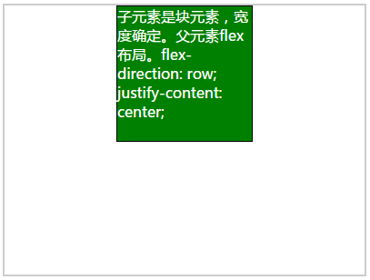
结果如下：
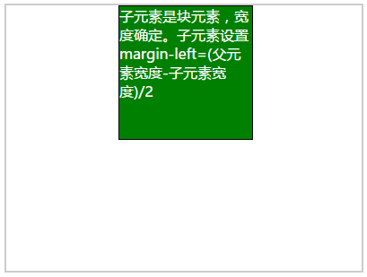 - 给子元素添加margin:0 auto;
垂直居中
元素水平居中的前提是父元素必须是块级盒子容器，且父元素高度必须已经被设定好。本文以下案例，所有父元素基础样式与水平居中的基础样式相同。
-
子元素是行内元素，高度是由其内容撑开的。设置父元素的line-height与height相同。
html 结构：
<div class="wrapper wrapper1"> <span class="span"> 子元素是行内元素，设置父元素的line-height=height </span> <div>css 样式表：
.wrapper1 { line-height: 200px; }结果如下：
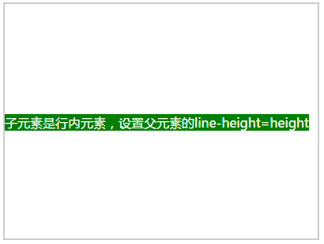 -
子元素是块级元素但是子元素高度没有设定，在这种情况下实际上是不知道子元素的高度的，无法通过计算得到padding或margin来调整，但是还是存在一些解法。
-
父元素display:table-cell; vertical-align:middle;
html 结构：
<div class="wrapper wrapper2"> <div class="non-height"> 子元素是块级元素但是子元素高度没有设定。 父元素display:table-cell;vertical-align:middle; </div> </div>css 样式表：
.non-height { color: white; box-sizing: border-box; border: 1px solid #000; background-color: green; } .wrapper2 { display: table-cell; vertical-align: middle; }结果如下：
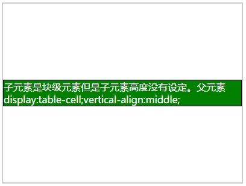 -
子元素是块级元素但是子元素高度没有设定。父元素flex-direction: column; justify-content: center;
html 结构：
<div class="wrapper wrapper3"> <div class="non-height"> 子元素是块级元素但是子元素高度没有设定。 父元素flex-direction: column; justify-content: center; </div> </div>css 样式表：
.wrapper3 { display: flex; flex-direction: column; justify-content: center; }结果如下：
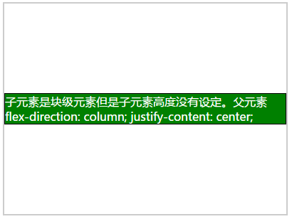
-
父元素display:table-cell; vertical-align:middle;
-
子元素是块级元素且高度已经设定。
.child-heigth { height: 150px; width: 150px; color: white; box-sizing: border-box; border: 1px solid #000; background-color: green; }-
计算子元素的margin-top = (父元素高度-子元素高度)/2。
html 结构：
<div class="wrapper wrapper4"> <div class="child-heigth"> 子元素是块级元素且高度已经设定。 计算父元素的padding-top = (父元素高度-子元素高度)/2 </div> </div>css 样式表：
.wrapper4 { padding-top: 75px; }结果如下：
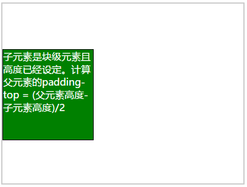 -
计算子元素的margin-top = (父元素高度-子元素高度)/2，原理同上。
结果如下。
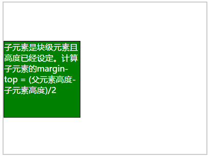 -
子元素绝对定位，设置top: 50%; margin-top: -(子元素高度)/2;
html 结构：
<div class="wrapper"> <div class="child-heigth child2"> 子元素是块级元素且高度已经设定 子元素绝对定位，设置top: 50%; margin-top: -(子元素高度)/2; </div> </div>css 样式表：
.child2 { position: absolute; top: 50%; margin-top: -75px; }结果如下：
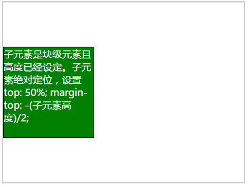 -
父元素flex-direction: column; justify-content: center;
html 结构：
<div class="wrapper wrapper3"> <div class="child-heigth"> 子元素是块级元素且高度已经设定。 父元素flex-direction: column; justify-content:center; </div> </div>css 样式表：
.wrapper3 { display: flex; flex-direction: column; justify-content: center; }结果如下：
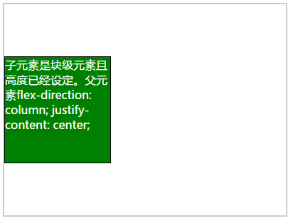
-
计算子元素的margin-top = (父元素高度-子元素高度)/2。
总结
css 水平垂直居中的方法有很多，在实践中慢慢总结经验，在不同的情况下选用最合适的方式。